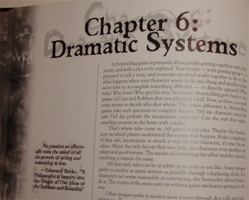
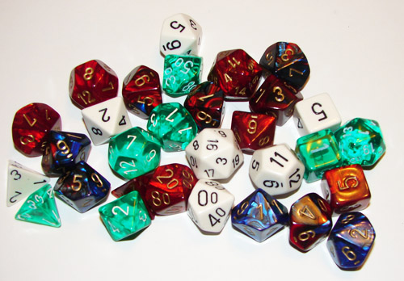
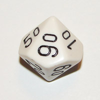
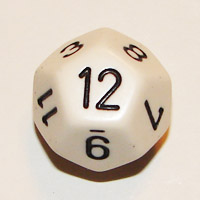

Common Knowledge
This section covers items that every game master should know. Some you may have heard from video games or if you are already somewhat familiar with RPG's you should have heard them before.
What is an RPG?

A Pencil and Paper Role-Rlaying game, also known as an RPG, is a storytelling game. Yes, there are game elements to it and rules to follow, and characters get new special powers and abilities and fight monsters, and there is a pencil and paper involved, but that is only half of it. There is no winner or loser like most games, just a group of friends working together to tell a story and having fun, which is the most important part.There are two types of players in these games. First, there is the Game Master and the other players are just Players. The Game Master has the most important job, and it is what this site is training you to do. The Game Master, you for example, creates the missions, quests, tasks, and control characters and enemies that the players will meet, and you are essentially controlling the world the Players are playing in. The types of missions, quests, tasks, and characters vary depending on which role-playing game you and your friends are playing. There are several hundred out there and this guide isn't going to cover them all, just give you a basic guide that can be applied to any of them. For example, in one game you might have the Players roaming a fantasy-world and are on a quest to retrieve a magic harp from the evil fairy queen, and in another game the players may be police detectives walking the streets at night to find a girl that was abducted from what appears to be a vampire.
The Players have it easy. All the players have to do is create the characters to travel the world the game master creates and complete the tasks you assign to them. All RPG's have different systems for creating characters that are different so please refer to the rules for the specific game you are playing for more information. Although not required, the Game Master should ask the Players to create back stories for their characters. The reason for this is most people have more fun doing this. Think about it, what type of character would think you could have more fun to play as:
- An elf mage with some magic skills, or
- A former elf royal mage trying to reclaim his lost heritage by seeking revenge and has a drinking problem.
Dice

Most of the RPG's use several types of dice. When a Player is using his character to do something in the game world that the Game Master created, such as fighting a vampire or looking for clues, the player rolls dice. These dice determine how successful the player is at doing what they are trying to do. All games have different rules for these. For example, the game Dungeons & Dragons mainly uses the twenty-sided dice to determine is something happened, but the World of Darkness games use several ten-sided dice. We are not covering all the rules for every game, so please refer to the rules of the specific game you are planning on playing, but all Game Masters should be familiar with the main types of dice that are used in game, because they can come up unexpectedly.
- D4
- D6
- D8
- D10
- Percentile Die
- D12
- D20
| Four-sided Die, also known as a D4. Unlike most dice, the result of this dice is the number that is displayed right side up on all of the sides, rather than whichever number is on top. |  |
| Six-sided die, also known as a D6. This is the most common dice known to man, and you've probably seen a lot of themin board games, and probably lost of a lot of them too. |  |
| 8-sided die, also known as a D8. Like most rest of the dice, you just read the number on the top. |  |
| 10-sided die, also known as a D10. Like most rest of the dice, you just read the number on the top. This can also be used in conjuction with the percentage dice listed next. |  |
| Percentage dice. This has numbers in increments of then. It is used with the 10-sided dice (D10) to come up with a percent number, so if the percentage dice came up as 60 and the D10 came up as 5, this totals 65. |  |
| Twelve-sided Dice, also known as a D12. Like most rest of the dice, you just read the number on the top. |  |
| Twenty-sided dice, known as a D20, is probably the most common dice in RPG's. |  |
PC's and NPC's.
These are terms that are used a lot in RPG's so much so that it is almost assumed everybody automatically know what they are. If you don't know what they are here is what the mean:
- PC is an abbreviation for Player character. This is what the Players take on the role as when they play an RPG. See the above section for more information.
- NPC is an abbreviation for a Non-player character. This is every other character that the Players met, either villager that wants to sell the something, town gaurd, and every Monster that the Players fight is an NPC and they are controlled by the Game Master.